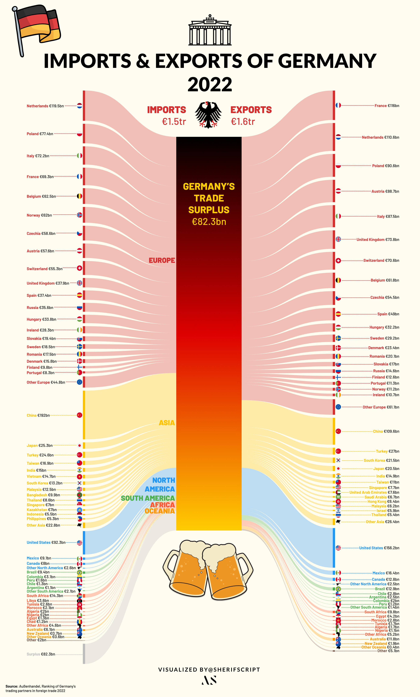
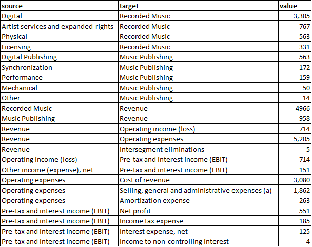

In an era where data is king, the ability to effectively visualise complex information is a skill of paramount importance. The Sankey diagram, a specific type of flow diagram, has emerged as a vital tool in this realm, offering a unique way to illustrate the flow of resources, finances, or information. In this project I delve into the creation of Sankey diagrams, exploring methods and tools ranging from GUI-based applications like Power BI and Figma to coding-based solutions in Python, and even online Sankey builders.
Sankey diagrams have found their niche in a variety of fields such as trading balances, income statements, and national budgets, to name a few. Their ability to represent both the magnitude and direction of flows in a single, intuitive visualisation makes them an invaluable asset in data analysis and financial reporting. In this post I share insights on the practical aspects of creating these diagrams and reflect on the experiences and challenges encountered using different tools and platforms.
Starting with GUI-based solutions, we explore how tools like Power BI and Figma can be leveraged to create visually appealing and informative Sankey diagrams. I'll discuss the nuances of these platforms, including their strengths and limitations, and provide hands-on examples: visualising Germany's 2022 trade balance and aid to Ukraine in 2023.
The journey continues with coding-based solutions, particularly Python, a powerhouse in data analysis. I'll explore the use of Plotly and Holoviews, demonstrating their capabilities for interactive and complex Sankey diagrams. This section is particularly insightful for those who prefer a more hands-on, coding approach to data visualisation.
Finally, I'll briefly examine online Sankey builders, highlighting their ease of use and accessibility, and how they're democratising the creation of Sankey diagrams, making them accessible to a wider audience without the need for specialised software or programming knowledge.
GUI. Figma.
If you have experience with Figma, you'd know it's a web-based design platform, more popular among web and mobile app developers than data analysts, as its primary use is for designing user interfaces. It is renowned for its aesthetic, user-friendly interface, as well as its ability to allow community-contributed plugins, akin to Python libraries, making it a versatile tool for beautiful data visualisations.
A notable mention is the 'Sankey' plugin by the Genuine Impact Team, a gem I stumbled upon while searching for an uncomplicated Sankey diagram solution. My project involved visualising Germany's 2022 trade balance, with data sourced from the German Federal Statistical Office. By following the quick tutorial, anyone could start building great Sankey diagrams in Figma with unlimited aesthetical options in under ten minutes.

This Sankey, although time-consuming due to the data's volume, was remarkably straightforward thanks to Figma. The platform's UI-centric design allowed for immense customisation, enabling me to enrich the visualisation with graphics and flags, all within the same workspace.
GUI. Power BI.
Despite my familiarity with Tableau (an elegant data-visualisation tool), I'd been eager to give Microsoft's Power BI a shot. I mean, I've been using Microsoft Office products forever, right? So it was pretty thrilling to choose Power BI as the GUI tool for this project. It didn't help that Tableau removed the ability to create Sankey diagrams completely from their platform. Tableau, as mighty as it is, seems to have never had the option available on their desktop platform; instead, it was offered briefly hidden in their beta visualisations section, only on the web version. Let's see how it goes.
At first, the UI seemed pretty intuitive to me after years using MS Office products, but then it took me longer to understand where everything was. After a little digging, I finally got a grip on how to approach such a project. I ran into my first obstacle quickly: you need a work or university account that uses Microsoft's professional cloud services to download Microsoft's plugin from the Power BI cloud plugin libraries. Luckily, I still had access from my old university.
After downloading the plugin, the process was extremely easy: add in the start and end points of each flow and their values, and et voilà, a diagram is ready. I thought it'd be interesting to visualise the aid that Ukraine had received so far since the Russian invasion of 2022. Luckily, this Council on Foreign Relations article provided detailed information on the aid to Ukraine as of October 2023.

My only issue was that I found Microsoft's Sankey plugin to be lacking in features. The scale settings in particular were not providing the results I wanted. Eventually I used the scaling option to fit all the nodes on the canvas; however, the side effect was that the flow sizes coming out of the nodes were not representative of the actual input values. This does not affect the comprehension a lot since the main insights regarding distribution are still readable, but it is something to take note of. Other Sankey plugins in the Microsoft store seem to feature more customisation. Embedding the diagram interactively in this post was not possible as my university account didn't have the necessary permissions 😔 Alas, I was glad with the final outcome and looking forward to using Power BI more in the future.
Code. Python.
Python, a staple in data analysis and science, also supports the creation of Sankey diagrams, though it might not be the primary choice for these types of visualisations. Python's rich ecosystem includes numerous visualisation packages like Seaborn, Altair, Plotly, and Matplotlib, each with its own nifty tricks and features. With just a few lines of code, one can produce stunning and thought-provoking visualisations. However, when it comes to Sankey diagrams (like any coding solution to this visualisation), using Python makes it slightly complicated. There is no universal way of creating Sankey diagrams across libraries, with each library taking in the data in a slightly different format.
For this illustration I've chosen Plotly and Holoviews. The reason is simple: interactivity. Sankey diagrams can get crowded very quickly depending on the levels of nodes. Interactivity provides a neat solution by enabling users to navigate the diagram effortlessly. Although slightly different in format, generally to build a Sankey using either Plotly or Holoviews you need three elements: source, target, and flow value.
Let's load the libraries:
import pandas as pd
import plotly
import plotly.graph_objects as go
import holoviews as hv
from holoviews import opts
hv.extension("bokeh")Holoviews.
Holoviews' required input format is fairly simple and is identical to how Power BI's required data format was. It takes three columns: source, target, and value.
The only issue with this method is some kind of error that pops up if you attempt to insert a period (.) in the label of the diagram. For example, using "U.S." instead of "US" will immediately throw an error. Will have to circle back to that.

holo_data = pd.read_excel(r"D:\Portfolio\Projects\UMG vs Warner Music vs Sony Music\Holoviews.xlsx")
sankey = hv.Sankey(holo_data, label=r"Warner Music FY 22 (in million US dollars)")
sankey.opts(label_position='left',
edge_color='target',
node_color='index',
cmap='tab20',
width=750, height=600)The result is an interactive bokeh-backed Sankey of Warner Music's FY22 income statement: revenue flowing in from Recorded Music and Music Publishing, splitting into operating expense buckets and finally into net profit.
Plotly.
The same can be achieved with Plotly (a much more common visualisation library than Holoviews), at the cost of things getting a little bit tricky. Unlike Holoviews' required input, there is no neat way to fit this into an Excel file or DataFrame. The main method in Plotly is to pass node names as indexed numbers and maintain the node list separately.
There are a number of different articles online explaining the methods and logic behind building a Sankey, so I won't go into much detail, but I'll explain my input.
The initial step is to create a dictionary to store source nodes, target nodes, and the flow, and then convert it to a DataFrame, similar to the main steps in Holoviews. I've written out the source, target, and value lists directly in the code to showcase that in cases where the data is not massive, it could be easier to create a Sankey all within Python without loading the data from somewhere else.
data = {
'source': [
"Digital", "Artist services and expanded-rights", "Physical", "Licensing",
"Digital Publishing", "Synchronization", "Performance", "Mechanical", "Other",
"Recorded Music", "Music Publishing", "Revenue", "Revenue", "Revenue",
"Operating income (loss)", "Other income (expense), net", "Operating expenses",
"Operating expenses", "Operating expenses", "Pre-tax and interest income (EBIT)",
"Pre-tax and interest income (EBIT)", "Pre-tax and interest income (EBIT)",
"Pre-tax and interest income (EBIT)"
],
'target': [
"Recorded Music", "Recorded Music", "Recorded Music", "Recorded Music",
"Music Publishing", "Music Publishing", "Music Publishing", "Music Publishing",
"Music Publishing", "Revenue", "Revenue", "Operating income (loss)",
"Operating expenses", "Intersegment eliminations",
"Pre-tax and interest income (EBIT)", "Pre-tax and interest income (EBIT)",
"Cost of revenue", "Selling, general and administrative expenses (a)",
"Amortization expense", "Net profit", "Income tax expense",
"Interest expense, net", "Income to non-controlling interest"
],
'value': [
3305, 767, 563, 331,
563, 172, 159, 50, 14,
4966, 958, 714, 5205, 5,
865, 151, 3080, 1862, 263,
551, 185, 25, 4
]
}
# Convert the data to a DataFrame
df = pd.DataFrame(data)Then we create a list called nodes, which will serve as the backbone of our Sankey diagram, representing all the unique starting and ending points in our financial flows. To construct this list, we merge and deduplicate values from both the 'source' and 'target' columns in our DataFrame. The use of sets ensures each entity is unique, and the union operation combines these distinct elements into one comprehensive list.
# Create a list of unique nodes
nodes = list(set(df['source']).union(set(df['target'])))Next, we focus on mapping the relationships. For Plotly to understand how to connect the nodes, we need to convert the textual references in our 'source' and 'target' columns into numerical indices. This is achieved through source_indices and target_indices: two lists that correspond to the index positions of each source and target in our nodes list. This translation from text to indices is a critical step, allowing Plotly to accurately map and visualise the flows between different nodes.
# Create mappings to indices for source and target
source_indices = [nodes.index(src) for src in df['source']]
target_indices = [nodes.index(tgt) for tgt in df['target']]With the nodes and relationships defined, we then structure the data in a format that Plotly can interpret. We create a dictionary named plotly_data, which is divided into 'node' and 'link' sections. The 'node' part contains our list of unique nodes, while the 'link' part describes the connections between these nodes, inclusive of the source indices, target indices, and the values representing the magnitude of each flow. This structured format is pivotal for Plotly to accurately construct the Sankey diagram, ensuring each flow is correctly represented both in terms of its origin, destination, and scale.
# Prepare the data for Plotly
plotly_data = {
'node': {'label': nodes},
'link': {
'source': source_indices,
'target': target_indices,
'value': df['value'].tolist()
}
}The final act in our visualisation was to pass plotly_data into Plotly's Sankey function, which then intricately plots each node and draws the links between them as per our provided indices and values. The diagram's aesthetic is refined using update_layout, where we add customisations such as title, font, and alignment. Upon calling fig.show(), our meticulously prepared data springs to life in the form of an interactive Sankey diagram.
fig = go.Figure(data=[go.Sankey(
node = plotly_data['node'],
link = plotly_data['link']
)])
fig.update_layout(
title_text="<b>Warner Music FY22 Income Statement (in million U.S. dollars)</b>",
title_x=0.5,
title_font_family="Calibri",
title_font_size=24)
fig.show()Overall, coding a Sankey diagram in Python can be more time-consuming than creating other types of visualisations. Nonetheless, the complexity of the process doesn't detract from the enjoyment of the journey. Similarly, you can use R to create Sankey diagrams. The open-source library ggsankey, available on GitHub, leverages the "grammar of graphics" concept, which is widely appreciated for its simplicity.
Online builders.
I couldn't bring this post properly to its end without discussing online Sankey builders. Most of the Sankey diagrams I've seen online seem to have been made using different online platforms rather than a specific tool, which represents a unique phenomenon in the world of data visualisations.
When it comes to online Sankey diagrams, most seem to originate from specific sources, with sankeymatic.com being the most popular. This site offers a user-friendly and straightforward interface for constructing Sankey diagrams and provides near-real-time rendering. However, this convenience comes at the cost of limited aesthetic customisation unless an external graphic editor is used.
Another tool I've recently discovered online was one with a fascinating story. A Redditor by the name of u/IncomeStatementGuy published a side project about a year ago which was a simple tool for visualising Sankey diagrams with a simple user interface that allows for an easy manipulation of all fields, such as currency suffixes or dates, with seamless transformations. The side project has now taken off and is used by multiple renowned and globally known corporations, highlighting the demand for income-statement Sankey diagrams.
Verdict.
| Tool | Best for | Breaks at |
|---|---|---|
| Figma plugin | Beautiful set-piece charts | ~50+ nodes |
| Power BI | Embedded dashboards | Quantitative scaling |
| Plotly | Interactive web embeds | Author complexity |
| Holoviews | Quick reproducible charts | Labels with periods (.) |
| SankeyMatic | Fast, one-off charts | Visual differentiation |
Sankey is a shape-of-argument. Use the tool that lets the argument breathe.
No single winner. Pick the tool that matches the cost of updating the chart: Figma for frozen set-pieces, Plotly for anything that will move.